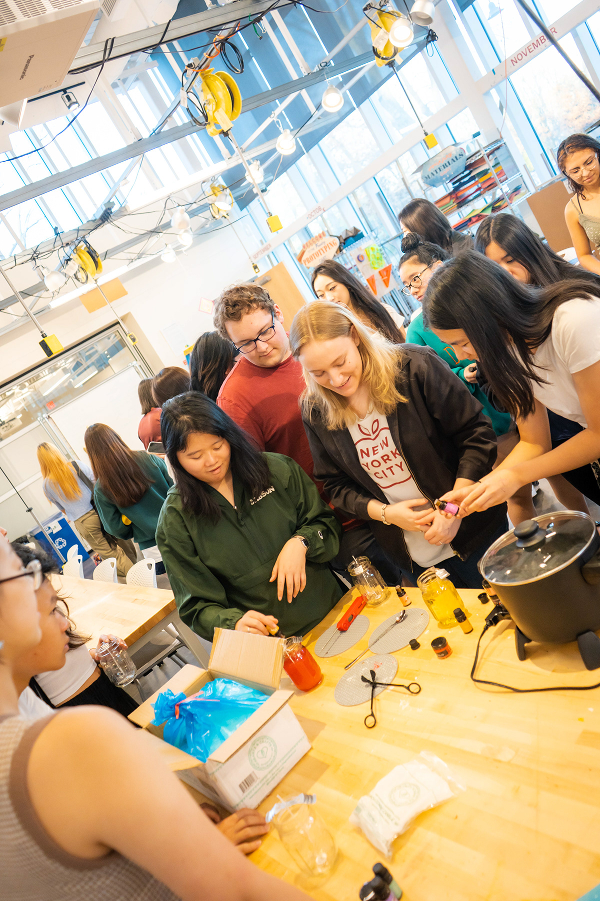
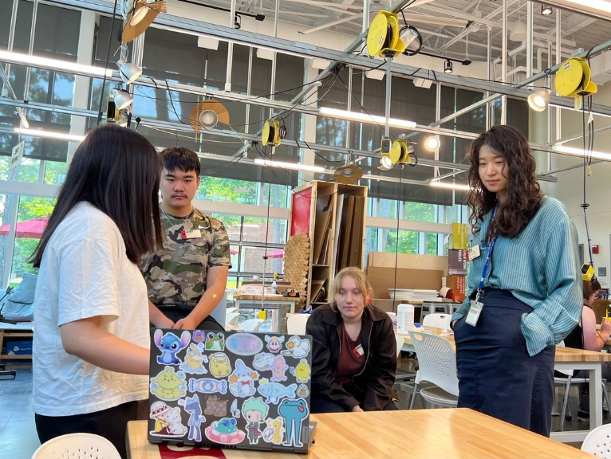
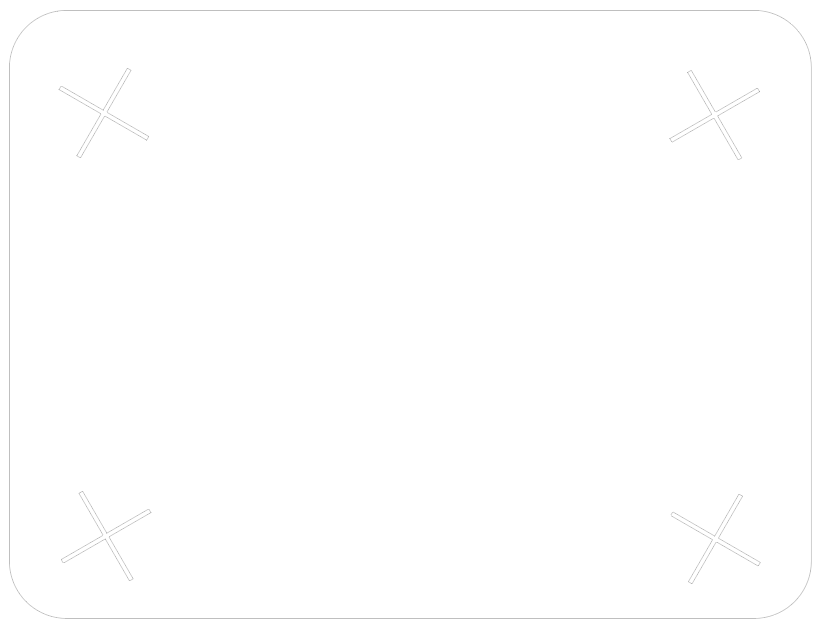
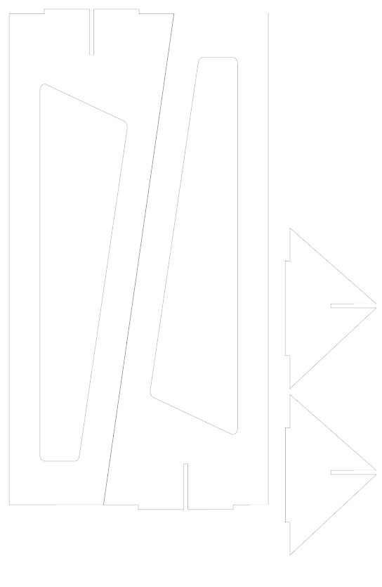
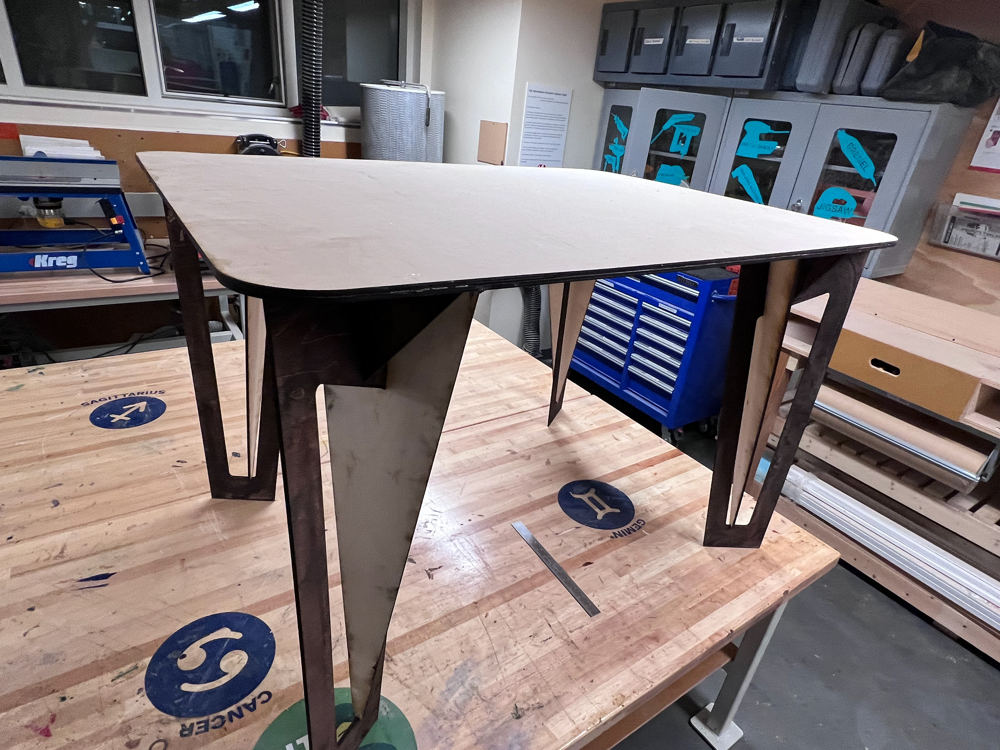
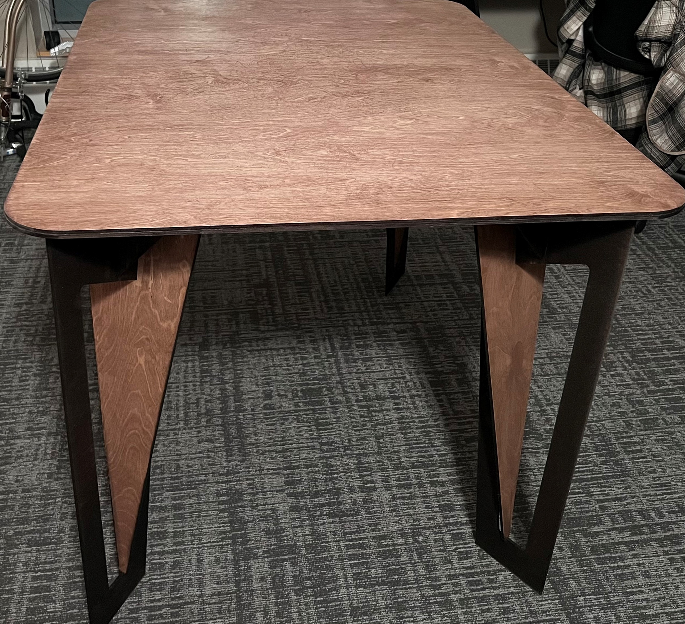

Foundry — Design Manager
Video embed on the original page: Behance video embed →


What is the Foundry?
Starting the spring semester of my first year at Olin I started working as a Scout at the Weissman Foundry, which is a tri-college collaborative maker space shared by Olin College, Babson College, and Wellesley College (BOW).
My role
For my first semester at the Foundry, I was able to run a workshop open to the entire community.
My other duties as a day-to-day scout include training students and faculty on equipment and prototyping tools such as 3D printers, laser cutters, and woodshop equipment. As well as advising users from the BOW community on projects and helping cultivate a creative and welcoming environment.
As a Foundry Scout, I also participated in a Scout Showcase. The Showcase allowed me to demonstrate all the skills I picked up throughout my first semester as a Scout. For my project, I tackled building a table — something that I originally thought wasn't possible. It wasn't until after my first prototype and a few iterations of the design that I was able to convince myself and others that it was perfectly obtainable to create a stable table from the laser cutter and materials from around the foundry.
Here are the designs I made in Adobe Illustrator to laser cut the table top and legs:


After laser cutting, I sanded the parts and applied stain plus a protective coating!


Taking charge as a Scout Manager
Clubs — Product Building and Jammin'
I also co-founded a new Product Design Club (Babson Product Building and Jammin') open to students from the 3 colleges, sponsored by the Foundry that helps break students into the Product Design space, particularly students from Babson College who don't have equal access to design courses and topics. After an overwhelming amount of support and interest in the club, we switched to an application system every semester. Students can join a coding cohort focusing on the fundamentals of front-end coding or the product design cohort which has students identify an existing app they use then uncover dysfunctional parts of the interface and create an improved prototype version in Figma. Club members are supported along the way by myself and others on the E-board team and by fellow students who volunteer as project mentors. Students both in and outside of the club are also welcome to monthly speaker events from relevant speakers in product design or software engineering-related fields at top-name companies.
I will work as a UX/UI mentor to PB&J students Fall of '24.